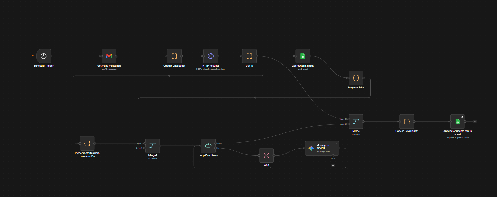
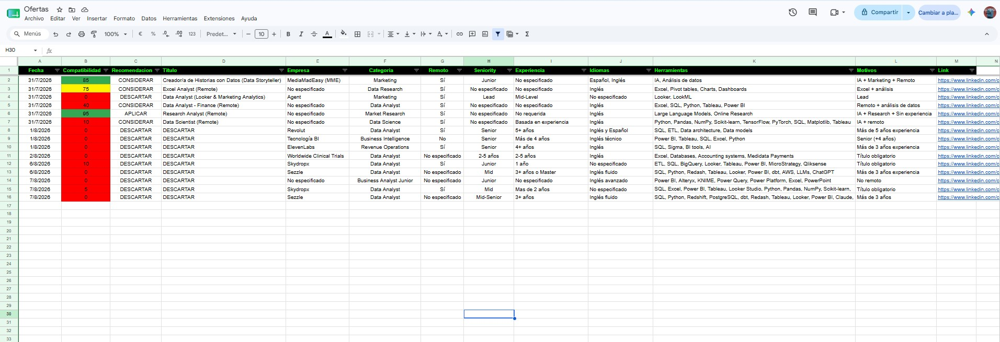

I'm interested in using AI and digital tools to solve practical problems, simplify repetitive tasks and find more efficient ways to work.
I'm a Digital Marketing & Advertising student with a growing interest in Artificial Intelligence, research and workflow automation.
I enjoy finding ways to make repetitive tasks simpler and more efficient. I'm especially interested in using AI and digital tools to turn processes that normally take time and manual work into something more organized and easier to manage.
Most of my practical experience so far comes from personal projects, where I learn by building, testing and improving real solutions. Job Analyzer AI is one example of that approach.
A practical automation project created to simplify a repetitive daily task while learning AI and workflow automation through real experience.


Looking for remote jobs every day quickly became repetitive. I built this workflow to automate that process: it collects LinkedIn job alerts, retrieves the information from each opportunity, analyzes them with AI according to my own criteria, and organizes the results in Google Sheets so I can review them more easily.
Areas I'm currently developing through study and practical projects.
Digital marketing, advertising and market research, with a focus on practical digital applications.
Exploring practical applications of AI for research, productivity, problem solving and everyday tasks.
Building automated workflows with n8n to connect tools, organize information and reduce repetitive manual work.
Web research, information gathering, organization, market research and prospect research.
Using AI-assisted development to build, test, adjust and improve practical projects.
Google Sheets, Canva and other digital tools used for organization, research and productivity.
My current academic and complementary learning.
University studies focused on digital marketing, advertising, communication and research.
Practical training focused on Artificial Intelligence, productivity and the use of digital tools.
Complementary training focused on data analysis and visualization using Power BI.
Complementary training focused on the practical use of prompts and Artificial Intelligence tools.